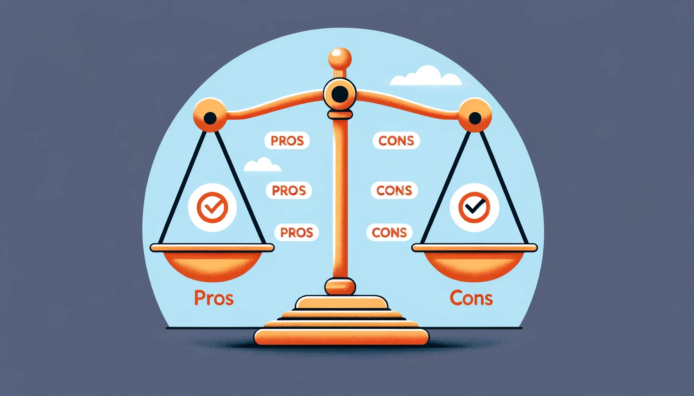

머신러닝 학습 방법#
머신러닝의 학습 방법 개요#
머신러닝 학습 방법의 기본 이해#

머신러닝의 정의: 컴퓨터가 데이터를 기반으로 학습하고, 예측하거나 결정을 내리는 과정
학습 방법의 중요성: 알고리즘의 성능과 정확도에 직접적인 영향을 미침
데이터와 알고리즘의 상호작용: 데이터를 통해 학습되며, 알고리즘에 따라 다른 결과 도출
지도 학습, 비지도 학습, 강화 학습의 차이점#

지도 학습(Supervised Learning):
레이블링된 데이터셋 사용
예: 분류(Classification), 회귀(Regression)
비지도 학습(Unsupervised Learning):
레이블 없는 데이터셋 사용
예: 클러스터링(Clustering), 차원 축소
강화 학습(Reinforcement Learning):
보상 시스템을 통한 학습
예: 로봇 제어, 게임 AI
각 학습 방법의 적용 예시와 중요성#

지도 학습 예시:
이미지 분류: 고양이와 개 구분
주가 예측: 과거 데이터를 바탕으로 미래 주가 예측
비지도 학습 예시:
고객 세분화: 구매 패턴을 기반으로 유사한 고객 그룹화
차원 축소: 데이터의 복잡성 감소
강화 학습 예시:
체스 게임: 각 수에 대한 보상을 통해 최적의 전략 학습
자율 주행 자동차: 다양한 시나리오에서 최적의 운전 방법 학습
학습 데이터의 역할과 중요성#
{kind=link}
데이터의 품질: 정확하고 다양한 데이터가 머신러닝 모델의 성능을 결정
데이터 전처리의 중요성: 불필요한 정보 제거, 필요한 정보 강조
데이터 다양성: 다양한 시나리오 및 사례를 포함하는 것이 중요
데이터 양: 충분한 양의 데이터를 통해 일반화 및 정확도 향상
실제 사례를 통한 학습 방법의 이해#

의료 분야:
지도 학습: X-레이 이미지를 통한 질병 진단
비지도 학습: 환자 데이터를 클러스터링하여 유사 질병 그룹 생성
금융 분야:
지도 학습: 고객 신용 점수 예측
강화 학습: 주식 시장에서의 자동 거래 시스템
통신 분야:
비지도 학습: 사용자 행동을 기반으로 하는 서비스 추천 시스템
강화 학습: 네트워크 트래픽 최적화
지도 학습 (Supervised Learning)#
지도 학습의 정의 및 기본 원리#

정의: 지도 학습은 입력 데이터와 그에 해당하는 출력(레이블)을 사용하여 모델을 훈련시키는 방법
기본 원리: 입력 데이터와 레이블 쌍을 모델에 제공하여, 새로운 데이터에 대한 예측을 수행
학습 과정: 미리 레이블링된 데이터셋을 사용하여 알고리즘이 패턴을 학습하고, 이를 기반으로 결정 또는 예측
분류(Classification)와 회귀(Regression)의 개념#

분류(Classification):
데이터를 미리 정의된 여러 클래스 중 하나로 분류
예: 이메일이 스팸인지 아닌지 분류(이항 분류), 손글씨 숫자 인식(다항 분류)
회귀(Regression):
연속적인 값을 예측하는 방법
예: 주택 가격 예측, 온도 예측 등
지도 학습의 대표적인 알고리즘 소개#

Naive Bayes 분류기:
조건부 확률을 이용하여 분류하는 간단하고 효율적인 방법
스팸 메일 분류, 문서 분류 등에 적합
의사결정 트리(Decision Tree):
데이터를 기반으로 결정 노드와 잎 노드로 구성된 트리 구조를 생성
결정 규칙을 명확하게 시각화 가능
SVM(Support Vector Machine):
데이터를 가장 잘 구분하는 경계를 찾는 알고리즘
마진의 최대화를 통해 데이터를 분류
지도 학습의 장단점 분석#
{kind=link}
장점:
높은 정확도와 신뢰성
다양한 실제 문제에 적용 가능
결과의 해석이 비교적 쉬움
단점:
고품질의 레이블링된 데이터 필요
과적합(Overfitting)의 위험
레이블이 없는 데이터에는 적용 불가
실생활에서의 지도 학습 활용 사례#
{kind=link}
의료 분야:
병리 이미지를 분석하여 질병 진단
환자 데이터를 바탕으로 질병 위험도 예측
금융 분야:
신용 점수 산정 및 대출 승인 결정
주식 시장 예측 및 투자 조언
소비자 행동 분석:
고객 구매 이력 데이터 분석을 통한 개인화된 추천 제공
소비자 트렌드 예측 및 마케팅 전략 수립
비지도 학습 (Unsupervised Learning)#
비지도 학습의 정의 및 핵심 개념#

정의: 레이블이나 분류가 없는 데이터를 분석하여 패턴, 구조, 관계 등을 찾아내는 학습 방법
핵심 개념: 입력 데이터만을 사용하여 데이터의 숨겨진 특성이나 구조를 발견
목적: 데이터의 내재된 구조를 이해하거나 새로운 통찰력을 얻는 것
클러스터링(Clustering)과 차원 축소(Dimensionality Reduction) 이해#

클러스터링(Clustering):
유사한 특성을 가진 데이터 포인트들을 그룹화
예: 고객 세분화, 사회적 네트워크 분석
차원 축소(Dimensionality Reduction):
고차원 데이터를 저차원으로 표현하여 복잡성 감소
예: 시각화, 노이즈 제거, 효율적인 저장 및 계산
비지도 학습의 대표적인 알고리즘 소개#

K-means 클러스터링:
데이터 포인트를 K개의 클러스터로 그룹화
각 클러스터의 중심을 계산하고 데이터 포인트를 가장 가까운 클러스터에 할당
가우스 혼합 모델(Gaussian Mixture Models):
데이터가 여러 개의 가우스 분포의 혼합으로 구성됨을 가정
데이터 포인트가 각 가우스 분포에 속할 확률을 계산하여 클러스터링 수행
비지도 학습의 장단점 및 도전 과제#
{kind=link}
장점:
레이블링 되지 않은 데이터로도 학습 가능
데이터의 숨겨진 특성을 발견할 수 있음
단점:
결과의 해석이 주관적일 수 있음
최적의 결과를 얻기 위한 적절한 파라미터 설정이 필요
도전 과제:
최적의 클러스터 수 결정
고차원 데이터에 대한 효과적인 처리
비지도 학습의 다양한 응용 분야#
{kind=link}
시장 분석:
고객 세분화를 통한 타겟 마케팅 전략 수립
생물정보학:
유전자 데이터의 패턴 분석 및 질병 연구
사회 네트워크 분석:
온라인 커뮤니티 내에서의 그룹 동질성 연구
추천 시스템:
사용자의 취향과 행동을 기반으로 한 맞춤형 추천
기준 |
지도 학습 (Supervised Learning) |
비지도 학습 (Unsupervised Learning) |
|---|---|---|
입력 데이터 |
입력 (예: 이미지) 및 출력 (예: 레이블)이 명확히 지정된 데이터 |
출력이나 레이블 없이, 오직 입력 데이터만을 사용 (예: 고객 구매 데이터) |
주요 용도 |
분류 (예: 이메일 스팸 여부 판단), 회귀 (예: 집 가격 예측) |
클러스터링 (예: 고객 세분화), 차원 축소, 연관 규칙 학습 (예: 시장 바구니 분석) |
계산 복잡성 |
데이터 레이블링 필요, 알고리즘 복잡성은 다양 |
레이블 없이 패턴 인식에 중점, 일부 알고리즘은 매우 복잡 |
성능 평가 |
명확한 정답이 있으므로 정확도, 정밀도 등으로 평가 |
명확한 정답이 없으므로 평가가 어렵고, 주로 결과의 해석에 의존 |
적용 예시 |
이미지 인식, 음성 인식, 이메일 필터링 |
고객 세분화, 추천 시스템, 사회 네트워크 분석 |
강화 학습 (Reinforcement Learning)#
강화 학습의 기본 개념과 메커니즘#

기본 개념: 에이전트가 환경과 상호작용하며 보상을 최대화하는 방법을 학습하는 과정
메커니즘: 에이전트가 행동을 취하고, 그 결과로 환경에서 보상 또는 피드백을 받음
학습 목표: 장기적인 관점에서 최대의 보상을 얻을 수 있는 전략(정책)을 학습
보상 시스템과 환경의 역할#

보상 시스템: 에이전트의 행동에 따라 긍정적 또는 부정적인 보상을 제공
환경: 에이전트가 상호작용하는 동적인 세계를 의미
학습 과정: 에이전트는 보상을 기반으로 행동을 조정하여 성능을 개선
강화 학습의 대표적인 알고리즘 및 응용 예시#

알고리즘:
Q-러닝: 행동의 가치를 추정하는 방법
정책 기반 방법: 최적의 행동 정책을 직접 학습
응용 예시:
게임: 체스, 바둑에서 최적의 수 찾기
자율주행: 차량이 다양한 교통 상황에 대응하는 방법 학습
게임, 로봇공학, 자율주행 차량 등에서의 강화 학습 활용#

게임: 인공지능이 스스로 게임을 플레이하며 전략을 개발
로봇공학: 로봇이 환경에 적응하고 특정 작업을 수행하는 방법 학습
자율주행 차량: 실시간으로 변화하는 도로 상황에 대응하는 전략 학습
강화 학습의 현재 연구 동향 및 미래 가능성#

연구 동향: 복잡한 환경에서의 학습, 다중 에이전트 시스템, 실시간 학습
미래 가능성: 고도화된 의사결정 시스템, 스마트한 자동화 솔루션
사회적 영향: 교육, 의료, 산업 등 다양한 분야에서의 응용 가능성
머신러닝 학습 방법의 선택과 적용#
특정 문제에 적합한 학습 방법 결정하기#

문제의 성격 파악: 분류, 회귀, 클러스터링, 강화 학습 중 어떤 문제인가?
지도 학습과 비지도 학습의 구분: 레이블이 있는 데이터인지 여부를 고려
복잡도와 정확도: 문제의 복잡도에 따른 적합한 알고리즘 선택
시간과 자원: 학습에 소요되는 시간과 필요한 자원 고려
데이터의 종류와 양에 따른 학습 방법의 선택#

데이터 크기: 대용량 데이터는 더 강력한 알고리즘 필요
데이터 특성: 텍스트, 이미지, 숫자 등 데이터 유형에 따른 최적의 접근법 선택
데이터 품질: 노이즈가 많거나 불완전한 데이터는 전처리의 중요성
머신러닝 모델의 성능 평가 방법#
{kind=link}
정확도와 오류율: 모델의 예측 정확도 평가
교차 검증: 데이터의 여러 부분을 사용하여 모델 검증
성능 지표: 정밀도, 재현율, F1 점수 등 다양한 성능 지표 사용
머신러닝 프로젝트의 성공적인 구현을 위한 전략 및 팁#

적절한 데이터 준비: 데이터의 질과 양에 주의
반복적인 실험: 다양한 모델과 매개변수로 실험
성능 튜닝: 하이퍼파라미터 조정을 통한 성능 최적화
결과 해석과 공유: 결과 해석의 중요성과 팀 내 공유